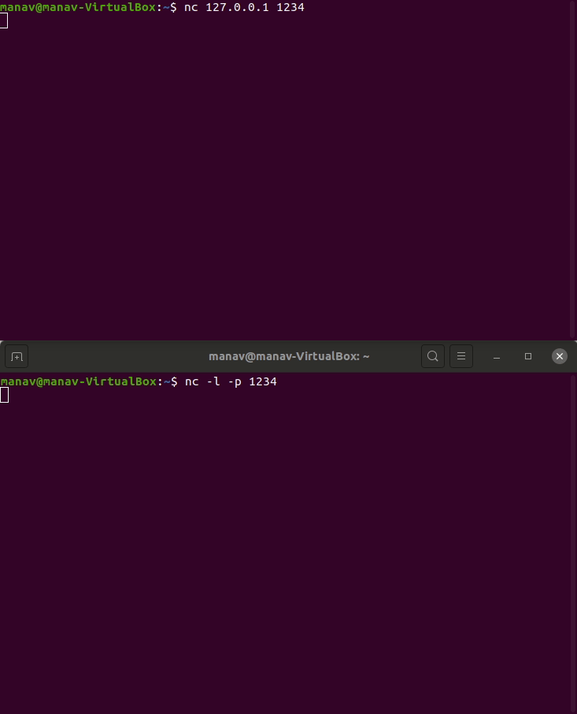

Netcat est un outil de mise en réseau utilisé pour travailler avec les ports et effectuer des actions telles que l’analyse des ports, l’écoute des ports ou la redirection des ports. Cette commande est même utilisée pour le débogage réseau ou même les tests de démon réseau. Cet outil est considéré comme le couteau suisse des outils de mise en réseau. Il pourrait même être utilisé pour effectuer les opérations liées aux sockets de domaine TCP, UDP ou UNIX ou pour ouvrir des connexions à distance et bien plus encore.
nc -l -p 1234
nc 127.0.0.1 1234
